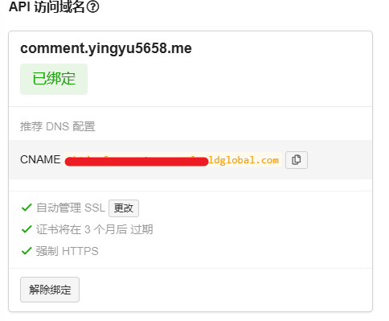

Valine评论系统踩坑记录
我个人很早以前就惦记着换上这个评论系统，曾经使用Butterfly主题的时候就有折腾过Valine，当时是浏览器缓存策略和CORS跨域拦截的问题。网上能找到的教程都比较老，几年以前的情况不再适用于现在了，所以现在去折腾的话，大概率要踩非常多的坑。本文主要讲述我个人踩到的坑和解决方法。
本文内容是我自己试错出来的，不要问为什么要这么做，我也不清楚，但是这么做可以正常使用！
首先你要有一个自己的域名，不要用.github.io。LeanCloud中设置-域名绑定-API访问域名要绑定你自己的二级域。

这里一定一定要做DNS解析，非常重要。
然后就是安全中心里面的Web安全域名，LeanCloud默认放行localhost，但是127.0.0.1我这边测试是不行的，如果有需求要自己填写。Web安全域名要填写https、http两种协议保险。
主题配置文件中，以我这个主题为例，serverURLs要填写自己的二级域名
serverURLs: https://comment.yingyu5658.me
一定要加协议头，否则将会在你的博客域名下构建请求，比如我的www.yingyu5658.me/comment.yingyu5658.me/，这将导致报错。即使你使用国际版也要填写这一项！Leancloud请求不到。
现在Valine的教程都有过时，遇到问题还需结合具体情况分析。我看LeanCloud的各种API结构变更还挺多的，太久远的教程就不建议看了。